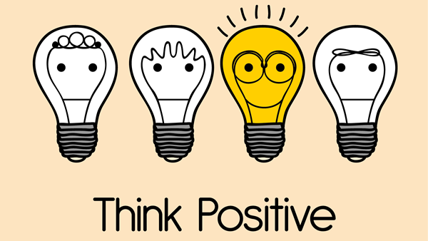
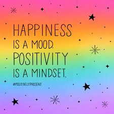

What is positive thinking?
Positive thinking is a mental attitude that perceives situations in a constructive way. It does not mean ignoring the negative. Rather, a positive thinker acknowledges a situation and looks at it productively.
Positive thinking is most effective when a person encounters neutral life events, such as starting a new job, meeting a new teacher, or beginning the first day of school. In these more ambiguous encounters, our perspective carries the most weight.
Activities to Help Your Child Develop a Positive Attitude
1. Be a model:
The more optimistic a parent, the better a child understands the principles of positive thinking. Interpret things in your own life positively. Express it openly and in
conversation with your child. For example, before the first day of class, ask, “Tomorrow is your first day of school. What are all the good things you are looking forward to?” If your child feels anxious, help them reframe their thoughts:
“If you feel worried about starting a new school year, it is just going to make you feel worse. Why don't we think about the positive things that can happen today at school?” The earlier a child learns to apply this technique, the more effective they become at using it.
2. Acknowledge when something bad happens:
Positive thinking does not mean dismissing the negative. If your child is recovering from a broken arm, for instance, acknowledge the pain: “It hurts and I understand it makes you feel upset.” Then demonstrate how you can reframe the negative situation by saying,
“If we dwell on the fact your arm hurts, it is going to make us miserable. Why don't we think of all the cool things we can do with the cast?” This reframing technique helps foster resilience in a child.
3.Loving Kindness Meditation:
Loving-kindness meditation involves thinking of loved ones and sending them positive thoughts. Later, your child can expand her positive thoughts to more neutral people in her life as well. Dr. Fredrickson describes this form of meditation as “directing good-hearted wishes to others.”
The four traditional phrases are, “May you feel safe. May you feel happy. May you feel healthy. May you live with ease.” But the actual wording you and your child use aren't important; it's about generating feelings of kindness and warmth.
By practicing generating these feelings, the brain is conditioned to think more positively. It also shows your child how easy it is to engage in feelings of compassion and kindness, which can help her connect more easily with others and increase her overall well-being.
4. Helping Others:
Helping others is obviously beneficial to other people, but it will also enhance your child's own positive feelings and attitude.
Helping others is also linked to fostering a sense of belonging, inner peace, and gratitude. Your child could help others by assisting an elderly neighbor with yard work or chores, helping a friend with homework, or participating in a canned food or clothing drive. You could also make
volunteering a family affair and regularly help out with a soup kitchen or other charitable organization.People who volunteer have been found to have higher self-esteem and overall well-being than those who don't.
5. Recording Daily Awe Moments:
Positive thinking can stem from recognizing and appreciating small moments of happiness and beauty. These simple moments can include laughter, a hug, a beautiful sunset, or the sound of birds singing.
One practical way to work on this skill with your child is to have her start an Awe Journal. You can keep one of your own as well, and you and your child can discuss them weekly or daily.
6. Developing Skills and Trying New Activities:
Recognize your child's strengths and give her opportunities to develop them and experience success. For example, if your child has a beautiful singing voice, let her try voice lessons and perform in voice recitals. If she's an excellent soccer player, sign her up for a local team.
As your child develops skills and succeeds as a result, she'll increase her confidence and develop a more positive outlook and attitude.
Similarly, trying NEW things can result in increased confidence and resilience. Encourage your child to try a new sport, instrument, game, or activity.

“Positive mind Positive vibes!”